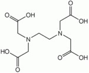

What is Chelation Therapy?
Chelation therapy is the use of a chelating agent or agents to aid in the removal of heavy metals from the body that act as toxins.
Then and Now
Chelation therapy was first widely used for medicinal purposes in response to chemical warfare used in World War I. Dimercaprol (British Anti-Lewisite, or BAL) was the first widely used chelating agent as a cure for Lewisite, the arsenic based poison gas. After World War II there was an outbreak of lead poisoning in the Navy among personnel who repainted the hulls of navy ships. The toxicity of the lead in these paints led to the use of EDTA as a lead chelating agent. EDTA differs from dimercaprol because it is a synthetic amino acid and contains no mercaptans. During the 1960’s, DMSA replaced BAL as well as EDTA, making it the US Standard of Care for the treatment of heavy metal toxicity caused by heavy metals as lead, arsenic, and mercury. Currently, DMSA is still the US Standard of Care.
Most Prevalent Chelating Agents
The most commonly used chelating agents today are :
- Dimercaptosuccinic acid (DMSA)
- EDTA (usually in its calcium disodium form)
- Dimercapto-propane sulfonate (DMPS)
- Alpha lipoic acid (ALA)
- Diethylene triamine pentaacetic acid (DTPA)
- Dimercaprol (BAL)
The Chemistry Involved
DMSA and BAL – both dithiols, bind metals through adjacent –SH groups, much like the proteins the metals would otherwise bind to in vivo. DMSA, specifically, can cross the blood-brain barrier and is used to sequester heavy metals in brain.
{kind=link}
{kind=link}
EDTA – widely used to sequester divalent and trivalent metal ions, chelates metals through four carboxylate and two amine groups.
 
Chelation Therapy as an Alternative Medicine?
Chelation therapists frequently claim that environmental and man-made exposures to heavy metals are common. Some examples of these exposures would be through contact with treated lumber, pesticides, herbicides, rodent poisons, contaminated seafood, paint, dental fillings, and mercury in vaccines. Chelation therapists claim that they can treat a wide array of problems from heavy metal poisoning to heart disease and autism. But do their claims have any merit?
Problems with Chelation Therapy Theories and Practices
The scientific theories these chelation therapists provide are not very solid. However, the problem is they sound reasonable in the absence of significant chemistry knowledge. Another big problem with alternative practice chelation therapists is the lack of reliability in the tests they use to identify heavy metal poisoning. Because reliable tests are so expensive, alternative practitioners rely on heavy metal identification in samples such as hair, nails, and urine. The problem is that the heavy metal content of these samples is so easily skewed from things like shampoo or a recent meal containing a common food high in heavy metals like fish. Two of the most common claims for chelation therapy today are its usefulness in the treatment of atherosclerosis and its treatment of autism.
Chelation Therapy and Atherosclerosis
Many chelation therapists claim that EDTA can be used to chelate calcium in the walls of arteries and will therefore slow or reverse atherosclerotic build up. Some of the problems with this theory are that it’s difficult for the EDTA to access the calcium that’s already part of the atherosclerotic plaque because EDTA is only effective in chelating extracellular heavy metals. Also, there is a substantial amount of extracellular calcium under normal physiological conditions and EDTA would most likely bind this calcium before it got near any atherosclerotic plaque. Another problem with this theory is that EDTA has a higher affinity for some other metals in the body such as iron and zinc. The formation constant for an EDTA-iron complex is five orders of magnitude greater than that of an EDTA-calcium complex and the formation constant of an EDTA-zinc complex is six orders of magnitude greater than that of an EDTA-calcium complex. Even another problem with the theory is that compared to cholesterol, calcium plays a minor role in the accumulation of atherosclerotic plaque.
A study performed at the University of Calgary reported that cardiac patients who received chelation therapy were no better off than those patients who received a placebo treatment. Also, zinc levels drop dramatically as a result of EDTA chelation and without proper replacement over the months of treatment, there is potential for very harmful side effects such as impairment of immune function and precancerous cellular mutations. The NIH started enrolling participants in 2003 for a study on EDTA chelation therapy as a treatment option for coronary atherosclerosis to try and help clear things up once and for all. This study should conclude in 2008.
Chelation Therapy and Autism
There are also chelation therapists who claim that autism can be caused by heavy metal poisoning and can be alleviated through chelation therapy. Autism is normally diagnosed in children before the age of three, when certain behaviors and impairments are observed in the child, usually around the age of one or two. Autism is most commonly linked to lead, usually through lead based paint in homes that these children are suspected to have put in their mouths, but lately attempts have been made to link autism to mercury in vaccines that young children receive.
In a laboratory study on rats at Cornell, young rats that had high levels of lead benefited from chelation therapy. However, the rats that had no lead in their system, but were still treated with the chelating agents showed the same declines in learning and behavior as those rats that were exposed to lead and not treated. This is an instance where chelation therapy could be a valid treatment for repeated or acute lead exposure; however the tests used by chelation therapists are not reliable enough to warrant this kind of treatment.
One of the more recent cases involving chelation therapy gone awry is in the case of an alternative practitioner in Pennsylvania that has been charged with involuntary manslaughter following the death of a five year old autistic boy who went into cardiac arrest fifty minutes after starting a chelation therapy with EDTA that resulted in hypocalcaemia. This is only one of the instances in which a death has been attributed to chelation therapy and is one of the biggest reasons that The National Council Against Health Fraud believes that chelation therapy should be banned as an unethical practice and chelation therapy of autistic children should be considered child abuse.
Conclusion
What it comes down to is that in the hands of a professional that has access to reliable tests, chelation therapy can be a viable option for someone suffering from heavy metal toxicity. However, alternative practitioners do not have access to these tests and should not be trusted when proposing chelation therapy as a treatment for exposure to heavy metals.
References
Cornell University. Chelation Therapy Reduces Lead-exposure Problems But Could Create Lasting Effects For Children Treated For Autism, Researchers Find. Science Daily (2006).
Knudtson, M. et al. Chelation Therapy for Ischemic Heart Disease. JAMA (2002).
Devanur, L., Evans, R., Evans, P., Hider, RC. Chelator-facilitated Removal of Iron from Transferring. Biochemistry J. (2007).
Wikipedia, Chelation therapy. (2007).
CEM 333, Formation Constants KMY for EDTA-Metal Ion Complexes.
CDC, Deaths Associated with Hypocalcemia from Chelation Therapy. (2006).
Quackwatch. Chelation Therapy: Unproven Claims and Unsound Theories. (2007).
NCCAM, Questions and Answers: The NIH Trial of EDTA Chelation Therapy for Coronary Artery Disease. (2002).
NCAHF Policy Statement on Chelation Therapy. (2002).
Author: Jarrod Rasnake
- Alzheimer's 1 2
- Antibiotics
- Antifouling Paint
- Arthritis
- Ayurvedic Medicine
- Breast Feeding
- Cancer Therapy
- Cattle Feed
- Cerebral Ischemia
- Chelation Therapy
- Chernobyl
- Chicken Feed
- Chocolate
- Cigarettes
- Coal 1 2
- Copper Mining
- Cremation
- Diabetes
- Electronic Waste
- Hat Making
- Hard Metal Disease
- Hybrid Cars
- Imaging 1 2 3 4
- Industrial Pollution
- Jewelry Allergy
- Lead Poisoning
- Lewisite
- Magnetic Particles
- Makeup
- Mountain Top Removal
- MRI Imaging
- Neurotoxicity
- Nuclear Power
- Nuclear Weapons
- Ouch Ouch Disease
- Peripheral Neuropathy
- PET Imaging
- Photodynamic Therapy
- Phytoremediation
- Pregnancy
- Radioactivity 1 2
- Seafood
- Sunscreens
- Tattoos
- Vaccines
- Wound Healing